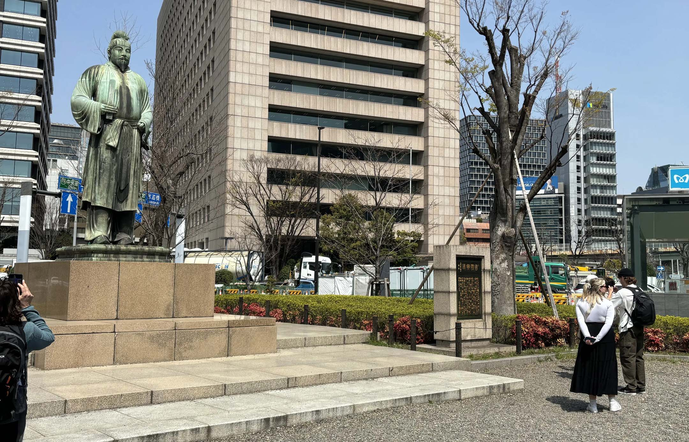
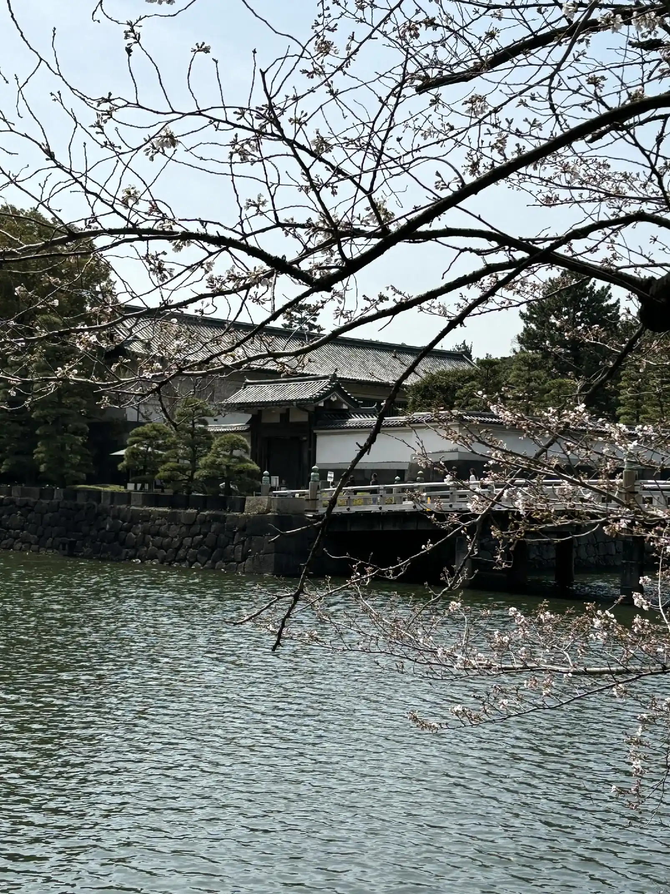
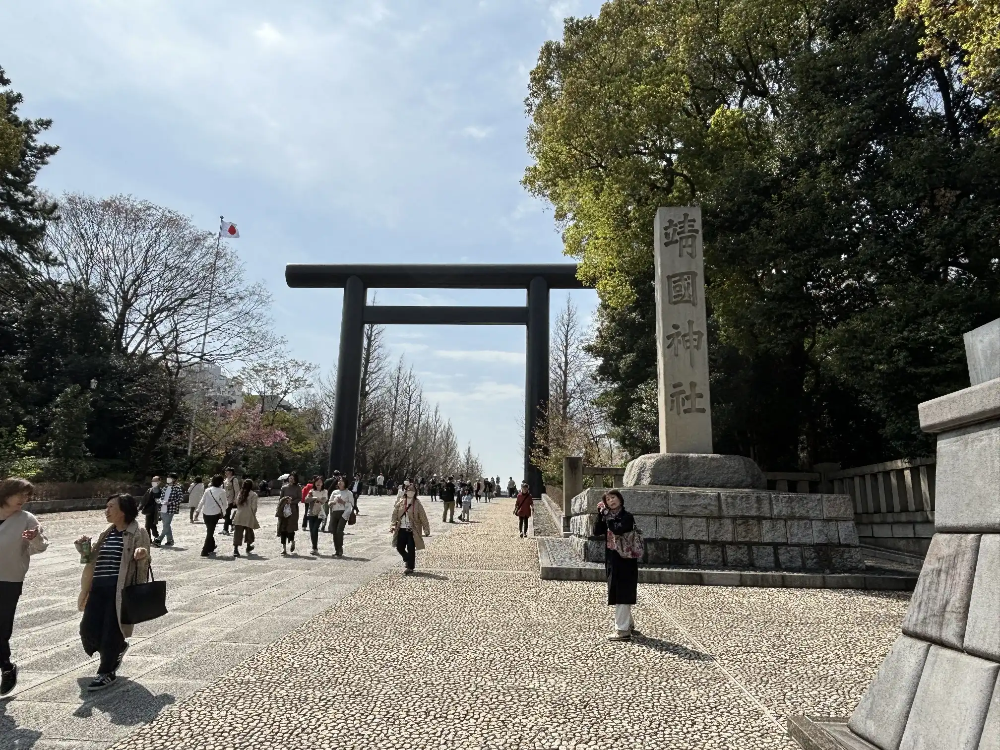
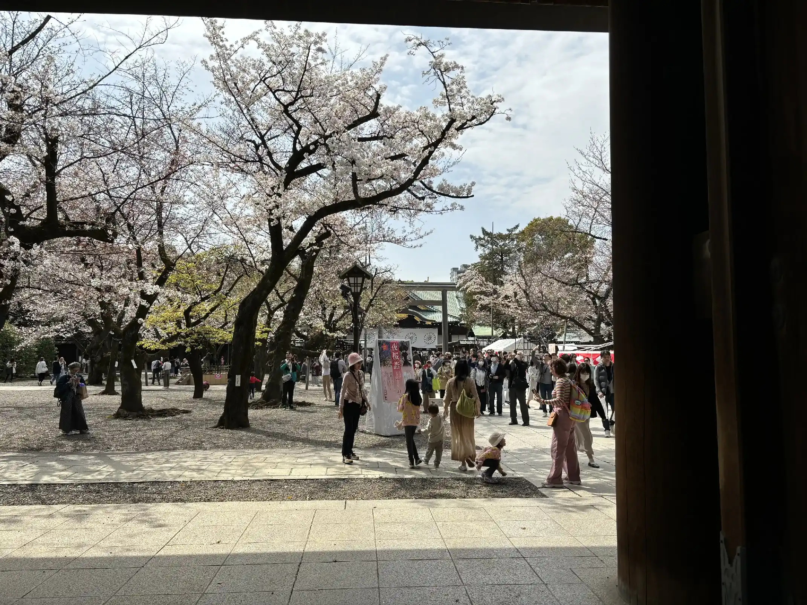
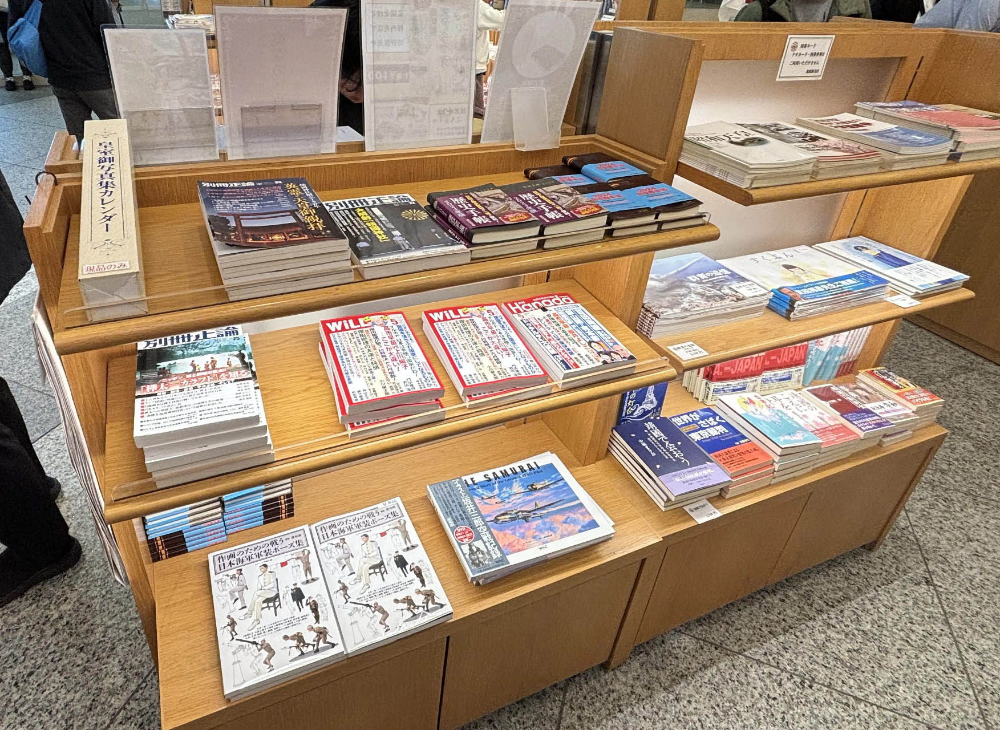
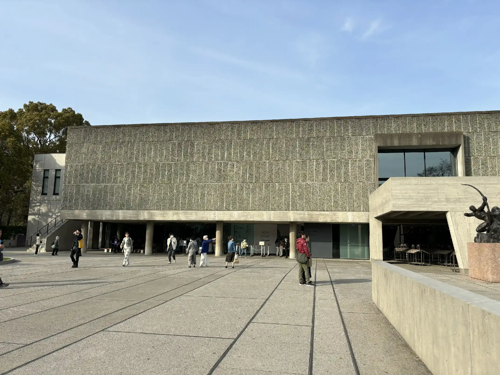
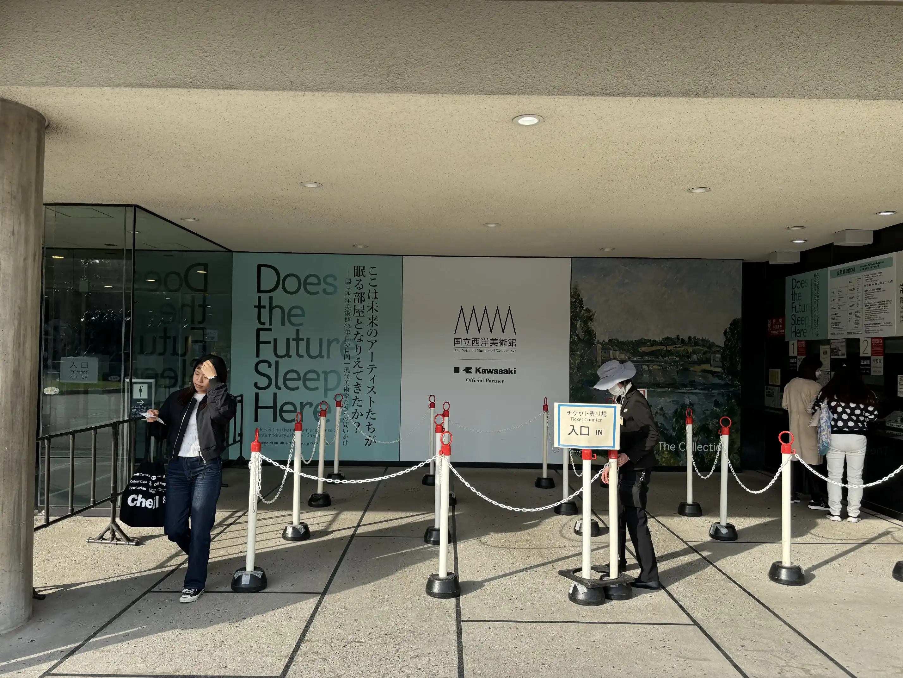
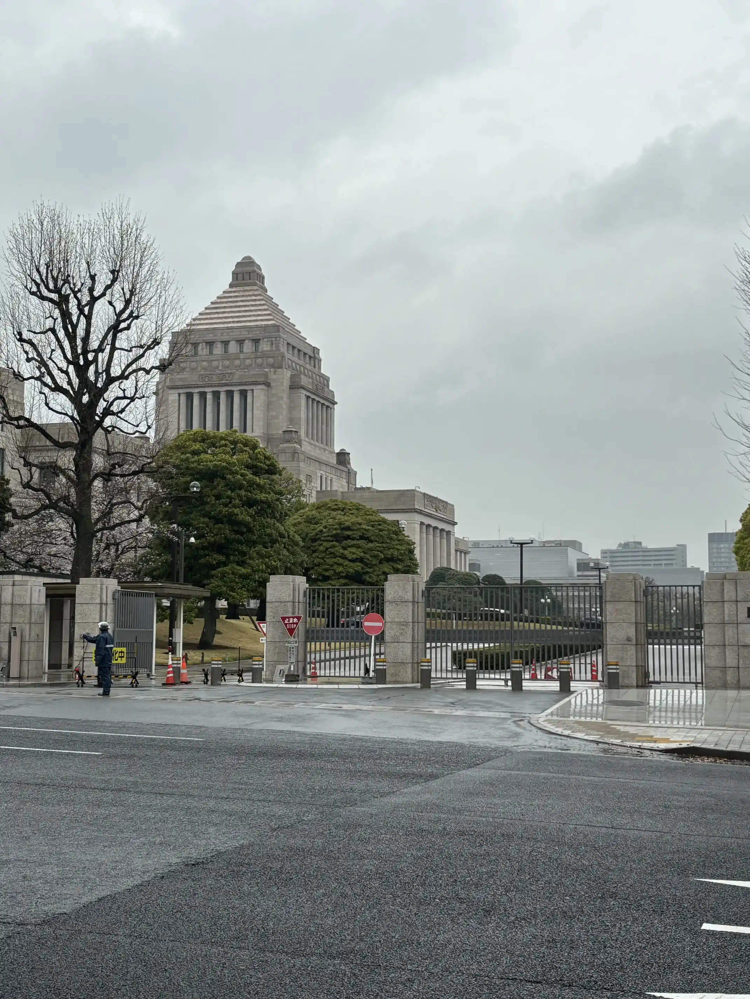
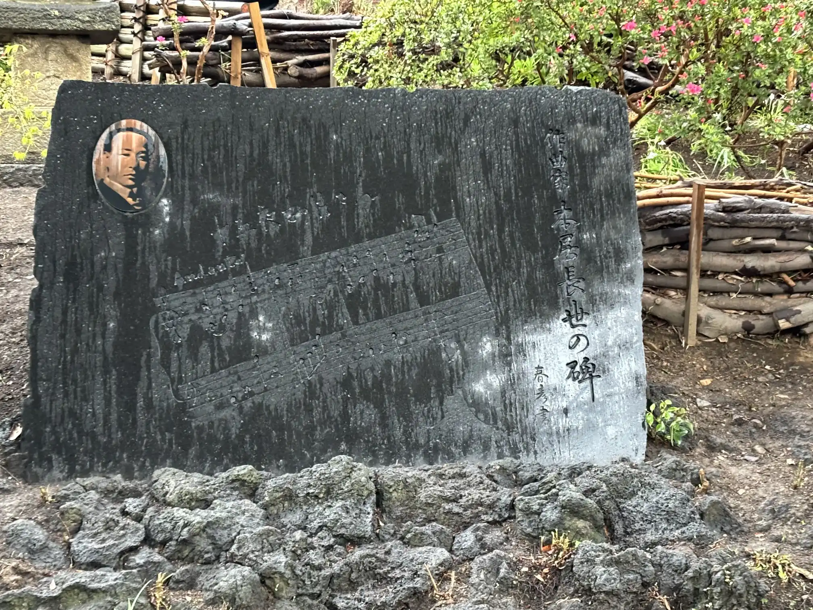

2024年東京旅行まとめ
東京旅行（04月02日、03日）
04月02日と03日の2日間、東京を旅行した。
半年以上経ってしまったが、これはその振り返り記事である。
この記事はえとるねん Advent Calendar 2024の12日目の記事です。
一日目（04月02日）
当初の目的は4つ。美術館巡りをしたかった。
1つ目は、国立西洋美術館で開催していた企画展「企画展 ここは未来のアーティストたちが眠る部屋となりえてきたか？ ――国立西洋美術館65年目の自問」。
2つ目は、国立新美術館で開催していた企画展「マティス 自由なフォルム」。
3つ目は、東京都写真美術館の「記憶：リメンブランス」。
4つ目は、板橋区立美術館の「『シュルレアリスム宣言』100年 シュルレアリスムと日本」。
目的地は決まっていたけれど、特に計画を立てていたわけではなかった。
一応は2日間の日程で、ぼんやり巡る順番を考えていた。
が、時間が足りなかったら飛ばしたり、だるかったら途中で帰ろう、くらいのテンションでいた。
東京駅に到着したのが11時30分頃だった。
14時に上野駅近くのビジネスホテルにチェックインする予約を入れていたため少し時間が空いた。
そんなわけで、東京駅から歩いて靖国神社まで行くことにした。もちろんその場で決めた。俺には計画性がないのだ
{kind=link}
将門塚。
スマホの地図アプリでルートを確認しながら歩いていく。
年明け頃、スマートフォンをiphoneの新しいやつに買い替えたので電池残量をあまり気にしないで移動できた。
買い替える前はバッテリーが死ぬほど劣化していて、もはや充電ありきの非ワイヤレススマホだった。やはりスマートフォンはインフラだよ。ないと困る。
地図アプリにしたがって歩いていくと、高層ビルに囲まれた立地のなかで謎の祭祀ゾーンがあった。
将門塚。
話には聴いていたが、こんな感じなんだな、くらいのテンションだったが、人がいて、お辞儀をしたり拝んだりしていてびっくりした。
やるなー将門。さすがだよ。
撮った写真はこれ一枚だけだけど。

{kind=link}
靖国神社へは、将門塚から皇居へ向かい、皇居を反時計回りで周りながら向かうことになった。
受動態なのは地図アプリにルート選択の権限をほどんど委譲していたからである。俺には計画性と主体性がないのだ。
皇居外苑の堀を歩いていくと、オッサンの像があった。
紀元2600年記念行事で建てられた和気清麻呂の像だ。
「國體護持」と「元帥載仁親王」揮毫の碑が傍らに建っている。
和気清麻呂公像のあたりは竹橋駅2番出口に近く、皇居ランナーのスタート地点として人気らしい。皇居ランナー。
楠木正成像は見られなかったのだが、いわゆる忠臣の像が皇居の周りに建っているのはいかにも國體護持。
ここから毎日新聞社の東京本社が見えて、あそこで野村秋介が......なんて思っていたのだが、調べてみるとそれは朝日新聞のほうだった。そりゃそうだ。

{kind=link}
4月。まさしく桜の季節。
花見に来たわけではなく、たまたま桜の季節に外出する気になっただけなのだが、ほんとうにタイミングがよかった。
和気清麻呂像を見た段階で気分はすっかり帝都観光気分。
そこに満開の桜ときたら、まるでザ・たっち、マナカナ、おすぎとピーコ。
でも、この写真の桜はまだ五分咲きくらいかも。
どうせなら、と平川門から皇居に入って、道沿いに進んで歩いていくことにした。主権は我にあり。
といっても皇居内のルートも地図アプリまかせだった。
通ったのは国立公文書館、科学技術館の横を通り抜け、北の丸公園を通って武道館へ抜けるルート。
武道館では某東京電機大学の入学式が行われていたようだが横目にスルーし、田安門から皇居を抜け、常燈明台横の歩道橋を通って靖国神社へ入った。
天気がよく、桜も咲いていたが、そのわりに人通りが多いというほどでもなく、とてもタイミングがよかった。気まぐれに感謝。

{kind=link}
第一鳥居前ではexcuse meと白人の旅行者に声をかけられ、記念写真を撮った。
この写真に写っている社号標はこれから約2ヶ月後の5月31日にToiletと落書きされることになる。
ニュースを見たときには、あの石柱にねーって感じでなんとなく感慨深くなったものだ。
それにしても、写真を見るだけで第一鳥居のデカさにビビる。
この鳥居は3代目だそうだ。1921年に創建50年を記念して建てられ、戦中（老朽化を名目として？）金属供出されたあとヒノキ製の鳥居が建てられ、1974年に再び金属製のものが再建されたらしい。
初代の鳥居は20m程度で、現在は25m程度の大きさのものが立っているようだ。戦前の写真を見ると周りに木々が少なく、その大きさが際立って見える。
靖国神社はもともと、戊辰戦争後に大村益次郎が献策して創建された「東京招魂社」であり、「東京招魂社」は明治12年に「靖国神社」へと改組され別格官幣社に位置づけられるまで神社ではなかった。
その後、1900年頃を起点に国家神道のシンボルとしてその政治的意義を強めていくのだが、それ以前、明治30年代頃までは見世物小屋や露店が境内に並ぶ「江戸情緒」あふれる賑やかな場所だったらしい。
実際に歩いてみると、現在でもひとが賑わう観光場所という趣きがあり、「話には聞いていたがそんな面影もあるなあ」という感慨があった。
毎年夏に開催されている靖国神社みたままつりでは盆踊りや奉納コンサートが行われているようだ。
8月15日に合わせていつか夏に行ってみたいと思った。

{kind=link}
この写真を見ると桜の咲き具合がわかると思う。
無邪気に写真を撮っていた。
はじめに書いた通り、当初、この旅行は美術館巡りを目的にしたものだった。
しかしもうこの段階で、頭の中は國體護持に満ちあふれていた。桜、皇居、靖国神社。どこからか「同期の桜」を合唱する戦友の声がする。
もはやアートとかどうでもいい。ホテルのチェックインは遅れることができないが、まだ時間は微妙にある。そんなわけで、俺は熱い愛国心をたぎらせて遊就館に入ることにした。

{kind=link}
展示をみた後で、売店に立ち寄った。
ネトウヨ雑誌ゾーン、アツい。本棚をみるとミリタリー系の本が多いが、ゴー宣やら林房雄の『大東亜戦争肯定論』もある。
観覧客は日本人外国人変わらず多く、みんなバンバン売店で記念品を買っていく。
熱い愛国心をたぎらせつつ、自分も負けじと、記念に図録と海軍カレー、あと靖国神社クリアファイルを買ったのだった。
雑誌や本は普通にいらなかったので買いませんでした。
遊就館をみた後はホテルのチェックインに間に合うよう、早足で上野へ向かった。
たしか、市ヶ谷か飯田橋からJR総武線に乗り、秋葉原で乗り換えて上野へ向かった。
無事ホテルにチェックインできたが、もうこの段階で満足感があった。あったし、正直歩き疲れていた。
どうせならどこかの店で昼食を摂りたいと思っていたのだが、疲れていたのでもうそんな余裕はない。コンビニでカップ麺を買い、ホテルでヌメヌメと摂取した。
昼食を食べると動きたくなくなって16時頃までダラダラ横になっていた。疲れたし、個室で横になってしまったので動けなかったのだ。
しかし、なぜ上野駅近くのビジネスホテルに予約したのかといえば、国立西洋美術館の展示をみるためだ。愛国ツアーもいいけど当初の目的はある程度果たしたい。
というわけで、閉館時間が迫っていたものの、重い身体を引きずりながら国立西洋美術館に行くことにした。
 
{kind=link}
{kind=link}
「ここは未来の～」は国立西洋美術館はじまって初の「現代美術」の展覧会であり、21組の作家を招いた企画展だ。
国立西洋美術館は日本で唯一ル・コルビュジエが基本設計した建築で、これに関連して2016年に世界遺産に登録されている。
まずこの展示を旅行の目的にしたのは、展示内容そのものより、2024年に入って個人的に建築に興味が出てきたからというのが大きかった。
展示内容については（うまく）いえないが、面白かったと思う。
いくつか目的にしていた作家がいた。小田原のどか、パープルーム、布施琳太郎、弓指寛治だ。
ただ、閉館時間が17時30分で、到着したのが16時半だったので、正直にいってあまりじっくりみることができなかった。
ひとつ印象深かったのが、ミヤギフトシの鏡のインスタレーションの前で、派手な着物を着た成金みたいなオバサンが自撮りをしていたことだ。
これには「東京」と「美術」をとても強く感じた。じっくり眺めたくなるほどの迫力だった......。
上野公園では花見客が多く、出店まで出ていた。
閉館後の夕焼けの景色と桜は美しかったが、歩き疲れていてとてもどこかに寄る余裕はなかった。わしには強すぎるほどの東京の波動でダメージを受けていたのもあるし。
そんなこんなでホテルに直行し、夕食も食べずに寝ることにした。
が、結局就寝したのは日付が変わった1時過ぎ頃だった。帰ってきた後でシャワーを浴び、横になってスマホをいじっていたら、すぐに時間が過ぎていってしまったのだ。
23時30分頃にはmisskeyのTLで「じゃれ本」なる遊びの参加が募集されていて、人生で初めてじゃれ本をやった。ルールを知らないまま参加した結果よくわからない感じになったが、思い出になったのでよかったです。
{kind=link}
二日目（04月03日）
朝7時30分頃に目が醒めた。
馴れないベッドだったからなのか、疲れていたはずなのによく寝られなかった。
8時頃に朝食を食べた。
朝食付きプランでホテルに泊まっていたため、和風や洋風など2、3種類のなかから1つの種類の弁当を選ぶことができた。のり弁当みたいな和風弁当を選んで食べた。
当初予定に入れていた東京都写真美術館の展示「記憶：リメンブランス」は、小田原のどか作品が目当てだった。
この一日であと3箇所は周れない気がする。国立西洋美術館で小田原のどか作品は観ていたので、とりあえずこれは飛ばして、残り2つだけはとりあえず観ることにした。
2日目ははじめに板橋区立美術館の「『シュルレアリスム宣言』100年 シュルレアリスムと日本」へ行くことにした。
美術館の開館が9時30分だったので9時30分にチェックアウトした。計画性がある。
都営三田線の西高島平駅から歩いて向かった。写真の通り初日は快晴だったのだが、2日目は雨の予報で、実際に雲模様があまりよろしくない雰囲気だった。
雨は降っていなかったが心配だったので途中のコンビニで折りたたみ傘を買った。
と、折りたたみ傘を買ってすぐに少しながら小雨が降り出した。タイミングがいいのか悪いのか。寒くなってきてつらい。
{kind=link}
板橋区立美術館に着いたのが10時20分頃、美術館自体は大きい建物というわけではないが展示は面白かった。
「『シュルレアリスム宣言』100年 シュルレアリスムと日本」を興味深く鑑賞した。
日本のシュルレアリスムはそれこそ瀧口修造と、それに関連して実験工房の名前位しか知らなかったが、戦後前衛芸術への影響から、特撮やアニメに繋がる流れがあるらしいと聞いていた（『銀輪』と円谷英二など）。
この意味で、どちらかといえば戦後の展開について知りたかったのだが、あまりそっちには立ち入らない内容だった。
展示はいくつかのセクションに分かれていて、だいたい時系列順に進む構成。単純にかっこいい絵が多いのと、美術団体や雑誌がかっこいいので面白かった。
セクションが進むにつれ治安維持法下で弾圧が強まり、戦中戦後でシュルレアリスム運動の参加者が次々戦地で戦死したり病死したりしていて、戦争の暗い影を感じさられる。
前日観た靖国神社の遊就館では「英霊」の遺品や手紙を中心とした展示がなされており、それとのコントラストに色々と考えさせられた。
最後のセクションに掲示されていた年表に「夜の会」と「実験工房」、「具体美術協会」の名前が出てきた。年表、グッと来る。
展示を観終わる頃にはすでに本格的に雨が降り出しており、歩いて駅まで行く気にはならなかった。
次の目的地は国立新美術館。図録を買って、 出口近くのバス停で20分ほど待ってバスに乗った。
バスは成増駅についた。腹が減ったので東武東上線成増駅すぐ近くの西友でモスバーガーを食べる。
この時、時刻は12時過ぎだった。この調子でいけば、まだどこかまわれるかもしれない。
まず、最後の目的地である国立新美術館には行くとして、あと国会議事堂と目黒不動へ行くことにした。
皇居や靖国神社をまわるお上りさん的な東京観光を続けるなら国会議事堂は外せない。中に入るつもりは毛頭なく、少し外観を見るだけでもできればよかった。
そして、目黒不動。初日で帝都東京を満喫した結果、頭の中では大きな喧嘩を求めて汽車に乗る高橋英樹、軍服の嶋田久作、戒厳令下の東京のイメージで溢れていた。
こうなったら、もう北一輝と大川周明の墓参りをするしかない。
とりあえず、国立新美術館へ向かった。
東武東上線池袋駅で副都心線へ乗り換え、明治神宮前駅で千代田線へ、乃木坂で降りる。
これまた安易なルート変更だが、乃木坂で降りたことで、乃木神社に行くことにした。昨年元日に乃木神社に初詣してプチ炎上した政治家がいたが、自分も参拝して炎上したい。
雨が降っていたため折りたたみ傘を指しながら、乃木神社を少し見て旧乃木邸を見て回った。
雨が降っていて傘をさしながら歩くのは大変だったが、雨の乃木坂は桜も映え非常に良いロケーションだった。
{kind=link}
{kind=link}
邸宅窓からは、かの水師営の会見でテーブルとして使われた緊急手術台が見えた。国立新美術館へ行く道では、頭の中ではあの唱歌が流れていた。
旧乃木邸には戦後「マックアーサー」が植樹したアメリカハナミズキの気が植わっていた。棗の木の孫木も植わっているが、やはりアメリカハナミズキのほうが印象的だ。
乃木神社を見た後で国立新美術館へ向かった。
黒川紀章設計の国立新美術館はでかく、新しかった。そして、人が大量にいた。
マティス展は内容はとても良かった。
作品は美しいし、やはり色がいい。ただもう一度言わせてほしい。人が多かった。
前半セクションは撮影禁止、後半は撮影OKという展示構成だ。偶然なのか運がいいのか、これまで行った場所はあまり人が多くなかった。
ただでさえ人が多くて気が散るのに、みんな後半からパシャパシャ写真を撮りはじめる。残念なことに、人が気になって作品をみることができなかった。
後半に撮影がOKになってから、動線を気にせずカメラを向けている人が多かった。写り込まないように移動するだけで疲れるし、パシャパシャうるさいし、作品をろくに観もせず写真を撮っている人が多い。
歩き疲れてか気分が落ちていたせいもあるかもしれない。最後にインスタ映えコーナーみたいなのもあるし、なんだか色々とうんざりしてしまった。
もともと人が多いところが好きじゃないのだ。

{kind=link}
国立新美術館でマティス展を観終わると、国会議事堂へ向かった。
千代田線に乗って国会議事堂前で降りた。時刻は15時10頃。人通りも少なく、なんとなく閑散としていた。
さすが永田町、国会議事堂前駅は国会議事堂の最寄り駅ということもあり、出口を出るとすぐに内閣府本府庁舎や議員会館、総理官邸が立ち並んでいる。その雰囲気にのまれて、少し迷ってしまった。
たぶん、参議院側を通り、ぐるっと回る形でよく見るあの構図の門前まで行ったと思う。疲れていたのと、挙動不審状態で迷っていたので細かいルートはもう覚えていない。
雨と時間帯もあるのか観光客はおらず、警備員や警察官ばかりいる。気圧されて写真を撮っただけで駅まで戻ることにした。
美術館を回ると図録を買うのでだんだんと荷物が重くなっていく。荷物が重いと気分も重くなるし足も重くなる。
目黒不動は東京観光の最終目的地だ。最後に気合を入れて向かうことにした。
国会議事堂から目黒不動へは1時間ほどかかってしまった。
国会議事堂前から溜池山王駅まで歩き、南北線・目黒線を通って不動前駅で降りたような気がする。
南北線は比較的新しいようで、天井まで覆ったホームドアが設置してあった。調べてみると、南北線は普通鉄道として日本ではじめてホームドアを設置した路線であり、そのため試験的にこうしたタイプのホームドアが設置されたらしい。
その後、コストに対して効果が小さいことや技術の進歩もあって、普及期には小型の天井まで覆わないホームドアが設置されることが多くなったようだ。
東京ではそれぞれ路線の沿線ごとに違う文化や雰囲気があるという。
地方の車社会で生きているとなかなか理解しづらいが、そんな感覚があるらしい。
街それぞれの文化や雰囲気を路線に仮託しているのだろうか。でも、たしかにサブカルの文脈で「中央線文化」について語られていることを目にする。
南北線の小綺麗なホームドアや電光掲示板は都会らしいし、鉄道網の張り巡らされた都市をその条件にする「沿線文化」の存在を思い出すと、なんだか東京が憎らしくなってきた。便利でいいよな。沿線文化ってかっこいいよな。
多分、「マティス展」と「国会議事堂」で気が滅入っていたこともある。あと単純に空腹で機嫌が悪かった。
東京観光を満喫していてなんだけど、やっぱり東京ってなんだか気に食わない。俺は絶対に地方の味方だ。有事の際には東京を見捨ててやろう。なにがシティポップだ。なにがシティボーイだ。

{kind=link}
駅から目黒不動までは結構な道のりだった。
途中で坂もあったし。迷ったし。雨降ってるし。
しかし目黒不動、瀧泉寺についたときにはうれしかった。時刻は16時50分。さすがに夕方で参拝している人はおらず、境内は自分ひとりだった。
肝心の墓がどこにあるのかわからないが、とりあえず境内を探索した。
境内には、金田一春彦が文字を書いている、「十五夜お月さん」の楽譜が描かれた本居長世の歌碑と、本居長世記念碑建設実行委員会メンバーの名前が記された立て看板があった。これが意外と面白く、藤山一郎、金田一春彦を筆頭に数々の有名人の名前がある。
五十音順で並んでいるが、藤山一郎からはじまり、最後には由紀さおりである。錚々たるメンバーだ。
そしてもう一つ、大川周明の文による北一輝の顕彰碑が立っていた。
碑文の末尾には昭和33年（1958年）8月と書いてある。「北一輝先生碑」の文字は辛亥革命時同士であった張群によるものらしい。
碑の文章は「歴史は北一輝君を革命家として伝えるであろう」からはじまっていた。
{kind=link}
墓は境内からすこし離れた瀧泉寺墓地の奥にあった。
「北一輝先生之墓」と書かれた少し大きめの墓石があり、何本も卒塔婆が立っていた。花も備えてあるが枯れてしまっており、墓の周りには草も生えていて、ごく丁寧に整備されているという印象ではなかった。
一方で墓石自体は劣化が少なく、最近建て替えられたようにも見え、未だ慕っている人がいるのだなあと感じた。
大川周明の墓は通路を挟んで反対側にあった。妻だった兼子と連名の墓で、北一輝とは違い一般的にみる大きさの墓石だった。
正直な感想をいえば、「案外普通」というところだ。おどろおどろしいものでも独特なスタイルなものでもないということは知っていたが、墓地の中にあると余計に「普通」だという印象が強かった。
夕方になり、辺りは薄暗くなってきていた。雨が降っていることもあって、手短にお参りして目黒不動を後にした。
目黒線不動前駅へ向かう途中、不動前駅通り商店街を通った。
個人商店街と雑居ビルと線路の高架の情景はひと昔前の邦画の雰囲気を思い出させて非常に風情があった。薄暗い駅へ向かう道を進んでいくとだんだんと人の姿が増え、道幅狭い道路のなかで急に駅入口があるような印象で、これもなんとなく暖かい感覚があった。
不動前駅からは東京駅に向かった。
東京駅につく頃にはすっかり暗くなっており、簡単に弁当を買った。疲れていて、これ以降の記憶はほとんどない。
この記事はすべて思い出して書いているわけではなく、メモを元にしている。そのメモを書いたのは、帰り際、新幹線に乗っている最中だった。
こうして2日間にわたる東京旅行は終わったのである。
過程はこんなところである。
なかなか楽しい旅であった。実はもう一日開けてあり、余裕があれば3日間観光するつもりでいた。
一日目が終わるころには疲れて、二日で切り上げようということにしたのだ。
元気があれば東京メトロ銀座線の「幻の新橋駅」を通過だけでもしてみたかったのだが、それはまたいつか別の機会にとっておこうと思う。
実は、この旅行の1ヶ月後、5月11日には愛知県西尾市三ヶ根山にある「殉国七士廟」と「比島観音」へ観光にいっている。「殉国七士廟」は「小さな靖国神社」といわれており、そこへ行ったのは、この旅行と継続した興味によるものだった。
国立西洋美術館の「転倒」をテーマにした小田原のどかの作品では、東アジア反日武装戦線に爆破された「風雪の群像」に言及している。
東アジア反日武装戦線は風雪の群像・北方文化研究施設爆破事件の前に、総持寺納骨堂爆破事件と興亜観音・殉国七士之碑爆破事件を起こしているのだが、この殉国七士之碑は殉国七士廟と関わりがある。
殉国七士とは、極東国際軍事裁判でA級戦犯として処刑された7名のことだ。
これを読んでいる皆はご存知の通り、大川周明はこの裁判でA級戦犯で起訴された被告人であり、精神障害と診断され訴追免除された人物だった。東條英機の頭を叩いた映像は有名だろう。
誤解しないでほしいのだが、俺は全くネトウヨじゃない。
信じてくれ。ファシストじゃない。ウルトラナショナリストじゃない。
歴史の真実に興味があるだけなんだ。やめてくれ。そんな目でみないでくれ。
次に旅行するとしたら、京都に行きたいと思う。京都学派とか、いいじゃん。近代の超克。世界史的立場と日本。
ここまで読んでくれた方、ありがとうございました。またいつか会おう。
- 2024年12月16日初版公開